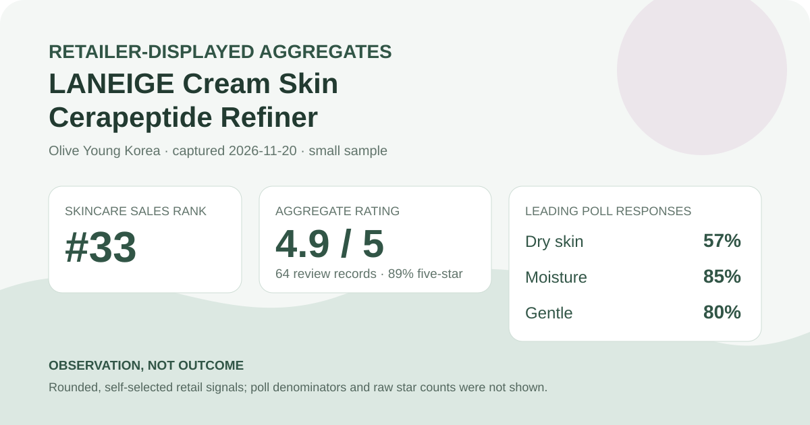
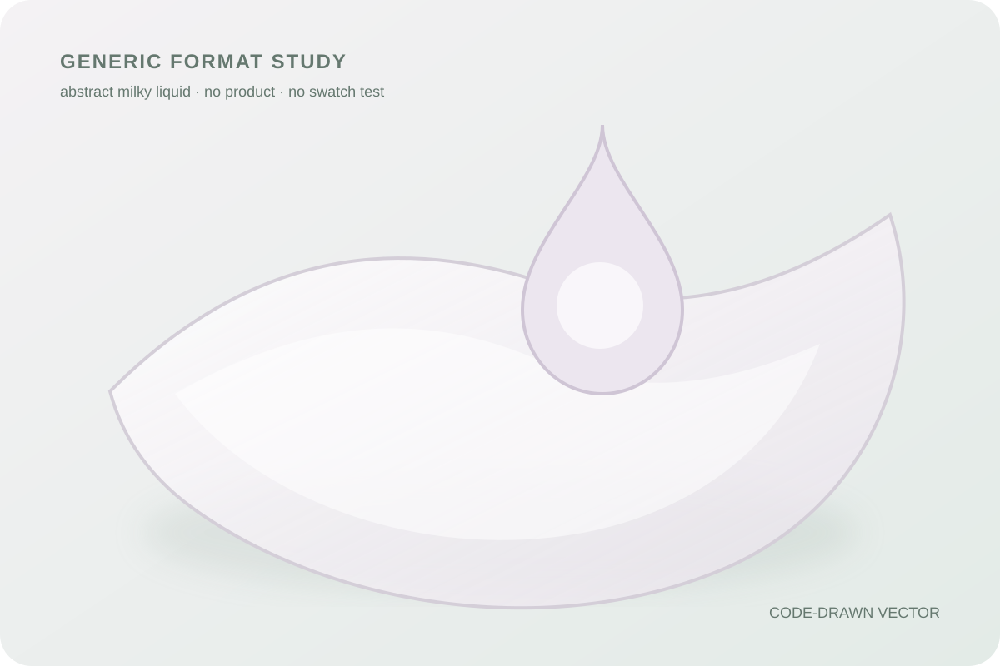

Data captured November 20, 2026. Olive Young Korea displayed “라네즈 크림 스킨 세라펩타이드 리파이너 170ml (+170ml리필+세안밴드세트).” This article uses “LANEIGE Cream Skin Cerapeptide Refiner” as a concise English label. It relies only on the live ranking, product identity, aggregate rating, displayed star shares, and shopper polls. It does not copy or translate individual reviews, names, or photographs, and it makes no claim of firsthand use.

The short version: LANEIGE Cream Skin Cerapeptide Refiner appeared at number 33 in the captured skincare sales ranking. The ranking, product page, and official review view agreed on the identity, while the product header and review detail both showed 4.9 out of 5 from 64 records. Five-star ratings represented 89% of the displayed distribution. Dry skin led the skin-type poll at 57%, moisture led the concern panel at 85%, and gentle led the irritation panel at 80%. The direction is favorable, but 64 records are still a small retail sample and cannot establish hydration, compatibility, or a Cerapeptide-related effect.
The official display showed 4.9 stars from 64 review records. That is enough to describe the current storefront signal, but it is not a large or stable evidence base. A handful of additional ratings could move both the average and the star shares more noticeably than they would on a listing with thousands of records.
The records may also span different purchase dates, prices, gifts, refill configurations, expectations, routines, climates, and packaging experiences. A retail rating can reflect delivery, value, convenience, presentation, and bundle contents alongside impressions of the formula. The interface did not expose a verified-buyer denominator or enough information to separate those influences.
The defensible conclusion is narrow: the captured listing had a strongly favorable displayed average across 64 records. It does not predict the next buyer's result, quantify a moisture increase, or establish that the formula performs better than another toner or emulsion.
The official rows showed 89% five-star, 6% four-star, 5% three-star, 0% two-star, and 0% one-star. The rounded shares total 100% and align directionally with the 4.9 average.
These are rounded percentages, not raw counts. Multiplying each share by 64 would create false precision, and a displayed zero can conceal a very small underlying count after rounding. The distribution is useful for understanding the shape of the current feedback, not for reconstructing individual records.
The displayed skin-type responses were 57% dry, 38% combination, and 5% oily. The rows total 100%. Dry skin was the largest represented label, but that describes who selected an option in the displayed sample; it does not demonstrate that dry skin receives a better result.
Self-reported skin type can vary with season, cleansing, medication, hormones, climate, and temporary irritation. The platform did not disclose the poll denominator, so the response base may be smaller than the 64 rating records. Readers should use these percentages as representation context, not as a compatibility score.
The concern panel displayed 85% moisture, 12% soothing, and 3% wrinkle or brightening. The rows total 100%, with moisture clearly dominating the retailer's shopper prompt.
This is not evidence of an 85% increase in skin moisture. The captured page provided no corneometer result, transepidermal-water-loss endpoint, duration, baseline, comparator, or standardized application method. The soothing and wrinkle/brightening labels are likewise consumer poll selections, not medical or clinical outcomes.
The irritation panel showed 80% gentle, 18% ordinary, and 2% felt irritation. The rows total 100%. The leading response is favorable, while the nonzero irritation response is a useful reminder that aggregate sentiment does not erase individual variation.
An 80% gentle response cannot screen for allergy, fragrance sensitivity, active dermatitis, a compromised barrier, prescription use, or interactions with exfoliants, retinoids, acne treatments, sunscreen, and makeup. Anyone with known sensitivities should read the current ingredient label and make an individual testing decision rather than treating a retailer percentage as a safety guarantee.
The captured review interface exposed individual review cards, but this analysis deliberately does not reproduce, translate, paraphrase, or count their text, names, profiles, or photographs. It also did not expose a sufficiently clear retailer-generated anonymous topic summary that could be reported with a stated scope.
That means the article does not make claims about scent, absorption, residue, layering, packaging, or repeat purchase based on individual anecdotes. Omitting those topics is preferable to creating an informal sample without a transparent selection rule. The evidence here is limited to the rating distribution and three displayed poll panels.

“Cream Skin” and “Refiner” are parts of the product's retail name. In general skincare language, a refiner or toner is commonly positioned after cleansing and before thicker leave-on steps. “Cream” in a toner name may suggest a richer or milky format, but a title alone cannot verify viscosity, slip, absorption speed, finish, tack, pilling, or occlusiveness.
I did not open, pour, spread, layer, or wear the product. The local visual uses abstract translucent shapes to describe a generic milky-liquid format and does not reproduce the bottle, liquid color, or a real swatch. Actual sensory behavior depends on the current formula, amount, application method, skin condition, temperature, humidity, and surrounding routine.
“Cerapeptide” appears in the displayed product name, but naming does not reveal ingredient identities, concentrations, stability, delivery, or contribution to the finished formula. No ingredient assay, penetration study, controlled comparator, or independent current-formula audit was part of this capture. I therefore do not estimate a peptide or ceramide amount, infer a mechanism, or convert the name into a barrier or anti-aging claim.
Readers seeking current ingredient, allergen, fragrance, or regional-formula details should consult the package and the brand's current disclosure. Reformulation and regional labeling can change independently of accumulated review records.
Rank 33 describes one capture of Olive Young Korea's skincare sales list. It is not a clinical ranking or a claim that the product is the thirty-third best treatment. Advertising, inventory, discounts, gifts, launch timing, influencer exposure, seasonality, and short-term demand can move a listing quickly.
The captured listing showed a 170 ml bottle with a 170 ml refill and headband set, a ₩33,000 reference price, and a ₩23,100 promotional price. Those details can change separately from the review aggregates. Before purchase, confirm the current seller, formula, volume, bundle contents, stock, expiry information, return terms, and checkout price on the live page.
How highly rated was it?
The captured display showed 4.9 out of 5 from 64 records, with 89% in the five-star row.
Was dry skin the largest displayed group?
Yes. Dry was 57%, combination 38%, and oily 5%. That describes response representation, not guaranteed fit.
Does 85% moisture mean an 85% hydration improvement?
No. It is a shopper-poll share without an instrument endpoint, baseline, comparator, or disclosed denominator.
Is the 80% gentle response a safety guarantee?
No. It cannot predict allergy, sensitivity, active irritation, or interactions with the rest of a routine.
Was the product personally tested?
No. The analysis uses retailer-displayed aggregates only, and the local artwork is a generic vector illustration rather than a product photograph.
Source: Olive Young Korea product listing and official aggregate review statistics, captured November 20, 2026. Open the source product page.
← Back to all analyses · Review-volume rankings · Skin-poll representation